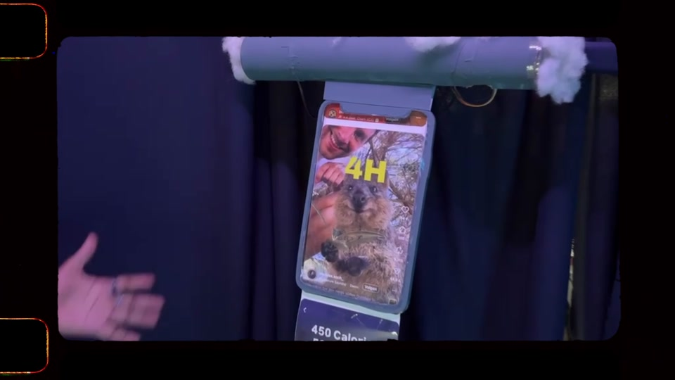
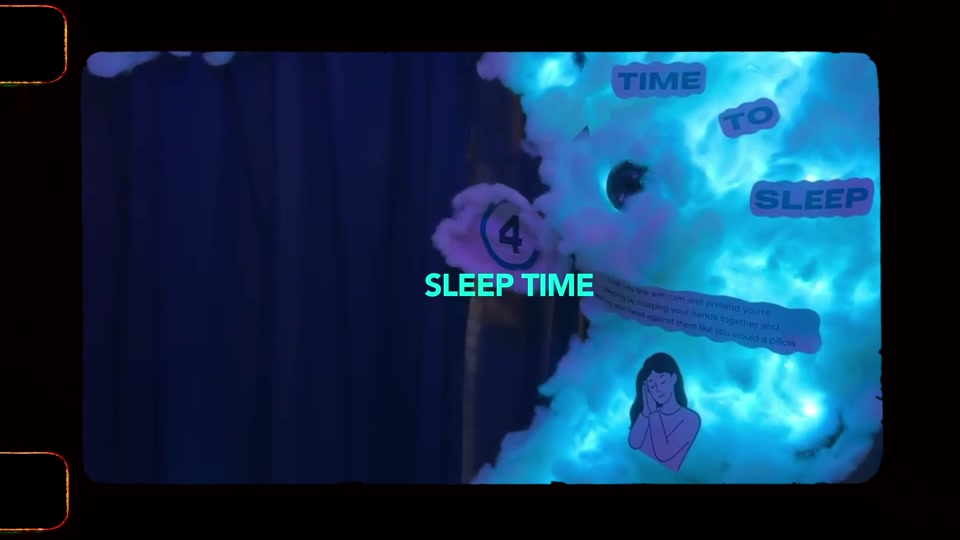

Sleep quality & stress
- Screen time, caffeine, alcohol and exercise
- A paper-derived sleep-quality estimate
- Sleep quality feeds a sleep score and a separate stress estimate
- The stress estimate shapes sound and the neuron wall
Collaborative installation
An interactive installation that turns everyday habits into a way to reflect on sleep.
The experience
We wanted to make a subject that often feels distant more tangible. Visitors entered their habits at physical stations, from drinks and exercise to screen time, then made a sleep gesture to begin the transition to the next day.
Light, sound and a memory-sequence challenge responded to values calculated from those inputs. Visitors could also take an NFC card linking to a personalised overview of their experience.
The installation was designed to encourage reflection. Its values are research-informed estimates for an educational experience, not a diagnosis or a validated prediction of an individual's health.
My contribution
I worked on the data story and processing. I connected public sleep datasets with research-backed mappings, shaped the sleep-score, stress and cognition pipeline, and translated its outputs into values the physical installation could respond to.
The installation was built by a larger team. The stations, electronics, visuals, sound and game came together through that collaboration.
From input to interaction
The project used two connected but distinct routes. The sleep score did not feed the cognition model: each path used the inputs it needed and produced values for the installation.
The sleep-quality calculation used a PSQI-based estimate with an assumed baseline. It was made for this installation and should not be read as a clinical assessment.
The data story
Our first plan was to link the datasets with regression. Instead, the sleep-duration model tended to predict close to the average for almost everyone. We tried other approaches and datasets, but the physical installation was already taking shape, so changing the whole interaction was no longer a simple option.
After discussing the problem with a teaching assistant, the team explored grouped sleep durations and values derived from research papers. A decision tree replaced the continuous duration model; separate research-based mappings helped connect the inputs to the installation's other outputs.
The installation


Trying it with visitors
Five participants answered a post-session survey. They rated the physical objects and inputs more positively than how clearly they noticed their inputs affecting the memory game's difficulty. Three participants mentioned confusion at the drinks station.
That feedback points to a useful next step: make the connection between a visitor's choices and the response easier to notice. It is a small evaluation, and it does not establish lasting changes in sleep habits or the accuracy of the final models.
Time to Sleep team: Adi Soebdhan, Arthur Godthelp, Daniel Chiapparini, Gabriela Llieva, Gijs Wiltink, Kristina Kapperud, Lars Gerritsen, Tzuling Lin, Lorenzo Ranise, Luca Pastor, Luís Antônio de Albuquerque Hollanda, Nadya Bildoy, Thibaud Pastor and Urtė Valeisate.
The team's data work drew on NHANES, research on electronic device use and sleep quality and sleep duration and cognition, and the Sleep Health and Lifestyle dataset.